| Sources of epidemiological data to inform health policy and manage programs | |||
|---|---|---|---|
| Definition | Use | Comments | |
| Public health surveillance | Continual systematic monitoring of the occurrence of disease/condition in a population using data from different sources. | Provides managers with ongoing data of the occurrence and distribution of conditions; can provide real-time warning of when and where an outbreak will occur. | Requires rapid and efficient long-term collaboration to collect and analyse data across health and other sectors |
| Disease registries | Legally mandated systematic registration, in a geographic area, of all individuals who contract a specific chronic disease, with longitudinal follow-up of all relevant events related to each individual. | Offers detailed information on the incidence and duration, treatment and outcomes of a disease to advise prevention and control policies and programmes. | Expensive and difficult to follow-up cases especially in low-income countries; requires efficient long-term collaboration across health facilities and multiple professionals to collect and analyse data. |
| Health facility records of health events | Continuous systematic, reporting of the occurrences of health events and mandatory reporting of notifiable diseases. | Assists public health departments to plan disease control and prevention policies and programs; and contributes to knowledge of global disease patterns. | Requires efficient and rapid information systems; trade-off between number of diseases to notify and reporting workload. |
| Civil registration and vital statistics | Mandatory continuous recording of all births and deaths (and cause) in a population. | Supports planning by providing birth and death rates and causes of death. | Not fully functional in many LIMCs where causes of death are hard to ascertain. |
| Adapted from The Palgrave Handbook of Global Health Data Methods for Policy and Practice | |||
Evidence and Hypothesis-Testing in Epidemiology
Human Health & the Environment
Dr. Alicia M. Rich
Thu Sep 25, 2025
Evidence and Hypothesis-Testing in Epidemiology
Human Health & the Environment
Thu Sep 25, 2025
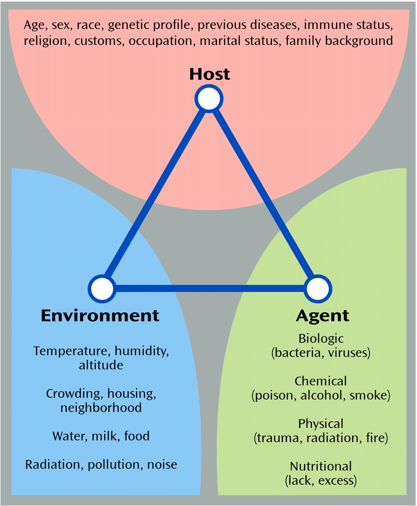
Introduction
What is epidemiology?
The study of patterns, causes, and effects of health and disease conditions in populations.
- Epidemiologists
-
observe health conditions among groups of individuals in populations at risk,
-
offer estimates of the severity of the health condition in the population,
- and identify factors and interventions that health programms can target to prevent and control the condition.
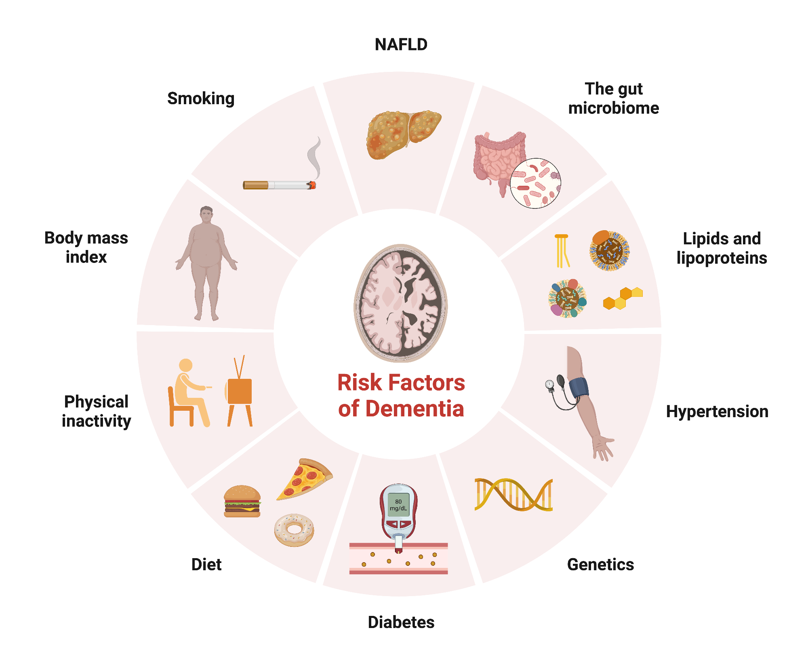
Research Approaches
- A good research question should
- be focused
- be relevant
- be meaningful
- build on what is previously known
Research Questions & Approaches
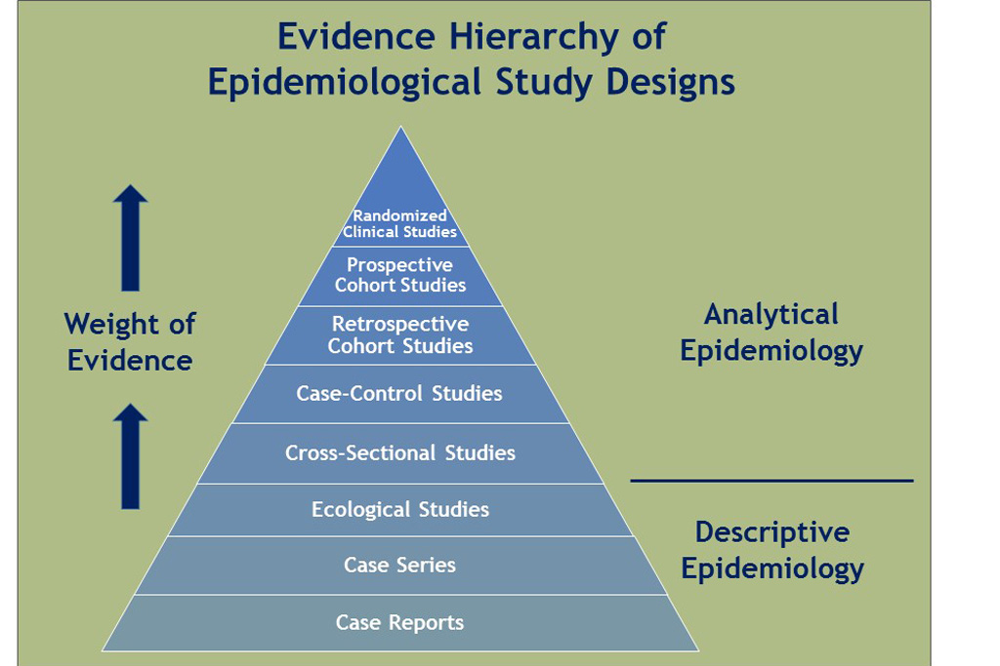
Scale of the Problem
What is the prevalence of a disease/condition, where and among which groups is it prevalent?
Cross-sectional Study
Random samples of individuals in a population at a point in time.
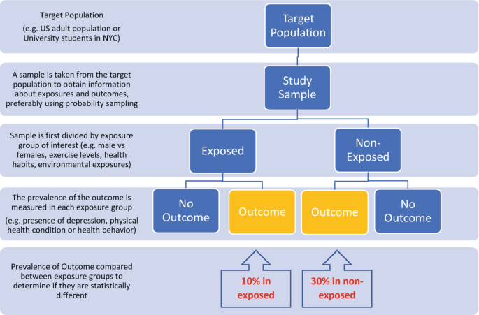
Prevalence rate: the proportion of people in a population who have a condition of interest at a point in time (or, for period prevalence, during a period of time).
Approach
- Describe the prevalence of the disease/condition by other characteristics of the population.
Use
- Informs about the scale, and demographic and geographical distribution of conditions
- Repeated surveys can establish trends and generate hypotheses
Caveats
- Not useful for rare conditions of very short duration
- Hard to control for confounding or to attribute causality
Association of Problem with Risk Factors
Which are the risk groups and factors associated with the disease/condition that an intervention could target?
Cohort (Longitudinal) Study
Follows a well-defined population over time who are exposed to risk factors of interest.
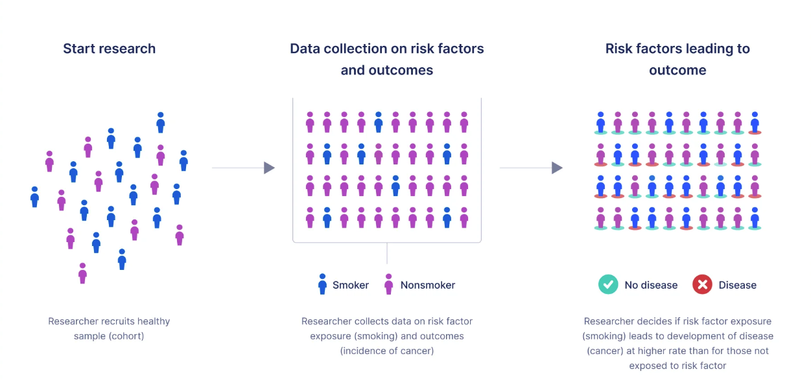
Incidence rate: the proportion of people in a population who contract a condition during a period of time.
Relative risk (RR): the ratio of the incidence of the outcome of interest in a risk group to the incidence of the outcome in a comparison group.
- RR = 1 No association between the risk factor and the outcome
- RR > 1 Positive association
- RR < 1 Negative association
Approach
- Compare incidence of a disease/condition in those exposed and in those who are not (relative risk).
Use
- Describes incidence and the course of the condition (prognosis).
- Identifies risk factors to target for interventions.
Caveats
- Takes time.
- Not feasible for rare conditions or diseases with long latency.
- Suitable cohorts can be difficult to identify and costly to follow.
- Ethical considerations include confidentiality and privacy.
Association of Problem with Risk Factors
Which are the risk groups and factors associated with the disease/condition that an intervention could target?
Case-control (Retrospective) Study
Selects a group of cases with a disease/condition and a group of controls without the condition (but otherwise similar) and records history of exposure to potential risk factors in both groups.
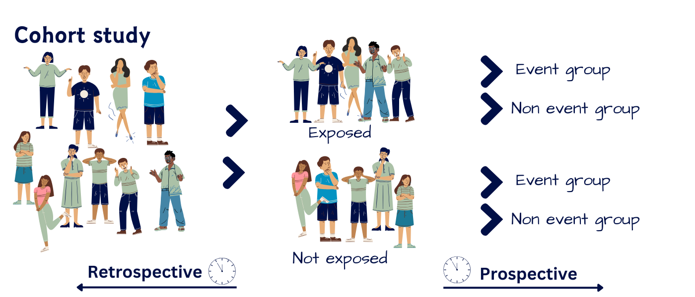
Odds ratio (OR): the ratio of the odds that an outcome occurs in a risk group to the odds that the outcome occurs in a comparison group.
For uncommon outcomes, the OR approximates the RR for an association.
Approach
- Examine odds ratio as a measure of association.
Use
- Rapid way to establish (multiple) risk factors to target for interventions.
- Especially for diseases that are rare or have long latency.
Caveats
- Information collected retrospectively.
- Prone to confounding and measurement bias.
- Difficult to establish a temporal relationship between risk and development of the condition.
- Selection of a suitable control group can be difficult.
Choice of Treatment or Intervention
Which intervention to recommend?
Randomized Controlled Trial (RCT)
Randomly assigns consenting participants, groups or communities to an experimental treatment, or to a standard treatment, no treatment, or a placebo.

Approach
- Mask assignment and limit the knowledge of treatment providers where possible.
Use
- Provides the best available evidence on the efficacy of treatments.
Caveats
- Expensive and cumbersome
- Trade-off between internal and external validity due to selected samples
- Study of harm is not feasible for ethical reasons
- For field interventions findings may not be generalizable beyond the study context.
Choice of Treatment or Intervention
Which intervention to recommend?
Quasi-experimental Study Designs
Utilizes control groups which are selected or matched, or statistically simulated, to be as comparable as possible to the subjects exposure to the new intervention.
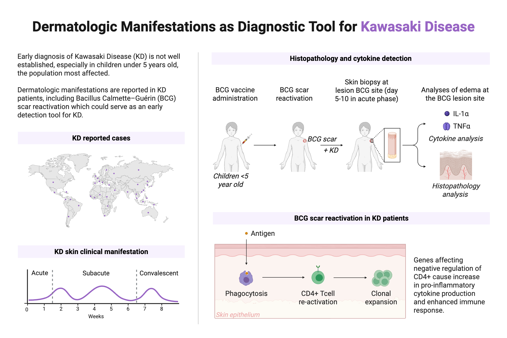
Use
- Most useful when RCTs are either logistically infeasible or ethically unacceptable (e.g., to evaluate the effects of legislation, on entire populations).
Caveats
- Each study design has its pros and cons (especially its risk of failure to control for potential confounders)
- Considerable experience is required to judge the most appropriate design for a given situation.
Research Methods & Ethics
Provides online resources for writing protocols and reporting for most types of epidemiological studies.
Since serious ethical considerations cut through all aspects of design and implementation of studies of people, investigators must gain approval from nationally approved institutional review boards.
Open source software developed by the CDC to provide customized tools for data entry and analysis, with excellent visualization including maps; it also supports development of small disease surveillance systems.1
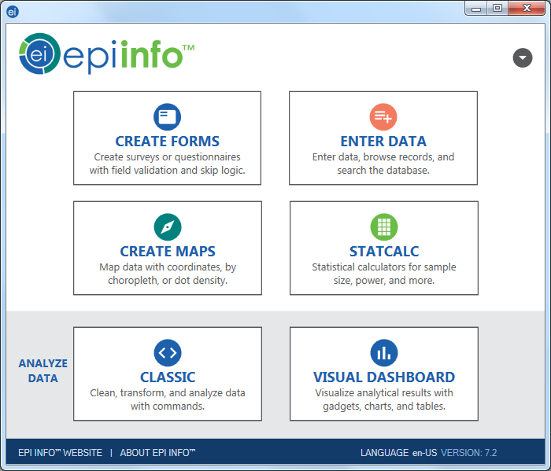
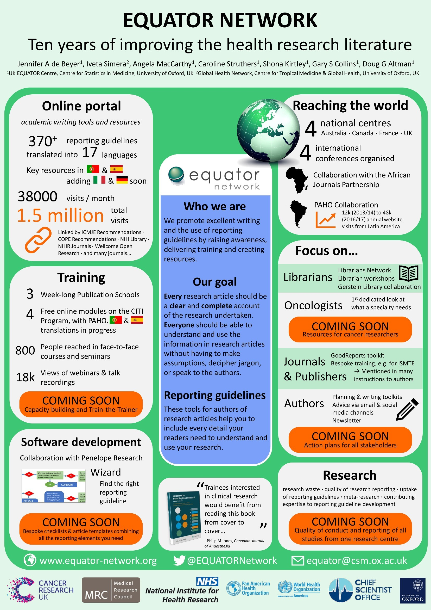
Critical Design Aspects
- Simple random sampling
-
not often feasible or appropriate
- Stratified sampling
-
population is stratified by variables like sex or age
- Random stratified sampling
-
random sampling within strata described above
- Cluster sampling
- investigators sample clusters from a population partitioned into homogeneous groups (or clusters), such as enumeration areas, villages or schools
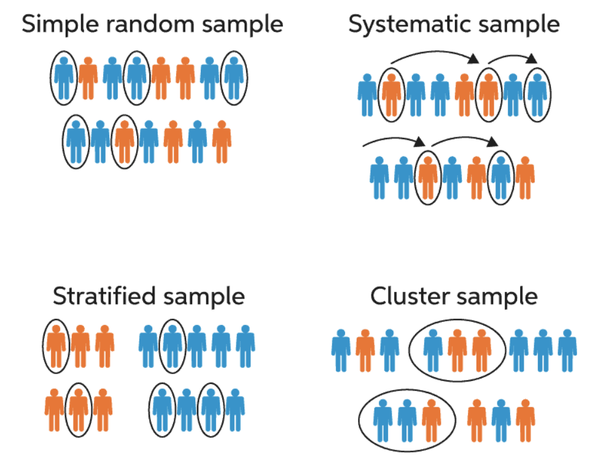
- Disease status can be ascertained by
- examining participants for symptoms and signs consistent with the disease or event using diagnostic laboratory tests,
- administering questionnaires or conducting interviews,
-
reviewing medical records, sometimes by linking subjects from different administrative or research databases.
- Accuracy requires
- direct laboratory assays for exposure
- careful interviews of cases (or surrogate information from several sources)
-
using standardized questionnaires to minimize recall bias.
- To ensure proper data quality, investigators can
- conduct pilot studies,
- employ laboratory quality assurance
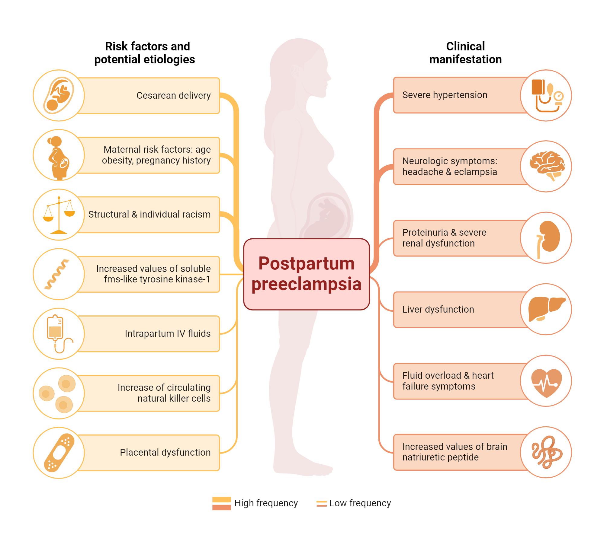
Epi Info1 includes a sample size calculator, which addresses the aim of the study, the type of study and the chosen sampling method.
- The investigator provides
- a margin of error or width of confidence interval they expect to obtain.
- estimated indicator values via literature review or pilot investigation.
The smaller the intended margin of error, the larger the required sample size.
Bias in Results
Bias is the extent to which a study systematically underestimates or overestimates the indicator described or the association reported between exposure and the outcome.
- In cross-sectional studies
-
when sample members do not represent the population to which the investigator hopes to make inference.
- For case-control or cohort studies
-
poor representativeness may not necessarily lead to bias, unless there is differential sample distortion with respect to exposure and outcome.
- In clinical trials
- selection bias arises when there are systematic differences between treatment groups in factors that can influence the study outcomes being measured.
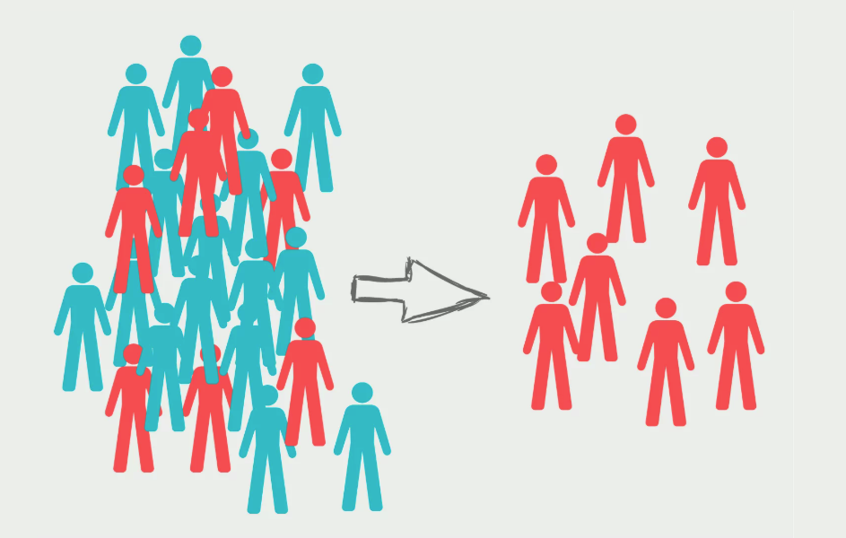
- Occurs through
- errors in recording observations
- participant recall bias
- instrument bias
- misclassification of exposure and disease status
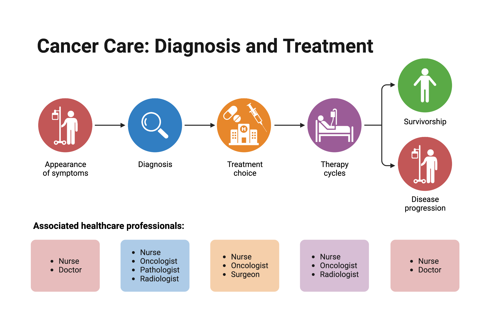
Counfounders
What if we fail to account for a key explanatory variable and attribute that variable’s contribution to the wrong predictor?
A confounder is an extraneous variable (not part of the purported chain of causality between exposure and outcome), often unobserved by the investigators, that distorts the relationship between exposure and the outcome of interest.
Confounding happens when the third variable is associated with the exposure while also being a potential cause of the outcome.
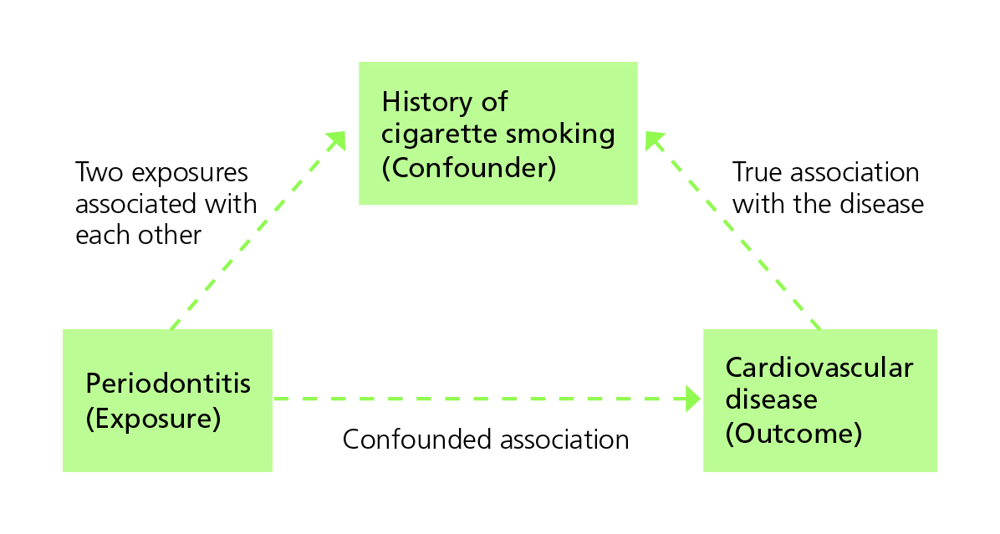
Other Common Pitfalls
Correlation and Causation
“X is linked to Y” ≠ “X causes Y.”
To establish causality after showing association, researchers need to:
- Satisfy themselves that potential biases have not importantly influenced their conclusions
- Demonstrate that the risk factor occurred before the health outcome
- Exclude spurious explanations for the association
- Describe a plausible chain of causality between the risk factor or treatment and the outcome.
It is difficult to establish a temporal relationship between risk and development of the condition for case-control studies.
RCTs provide the best form of evidence of causality, but they may not always be logistically or ethically feasible.
Absence of evidence ≠ evidence of absence
We cannot conclude something does not exist or occur just because we have not observed it.
Cherry-picking studies
The relative weight of evidence matters.
Overgeneralization
One study’s findings cannot be applied universally.
Relative vs. absolute risk
“Doubles your risk!” might mean from 25% to 75% or from 0.01% to 0.02%.
Case Study
Can you use this to explain at least one of the following pitfalls:
- Selection bias
- Measurement bias
- Confounders
- Correlation and Causation
- Absence of evidence vs evidence of absence
- Cherry-picking studies
- Overgeneralization
- Relative vs. absolute risk